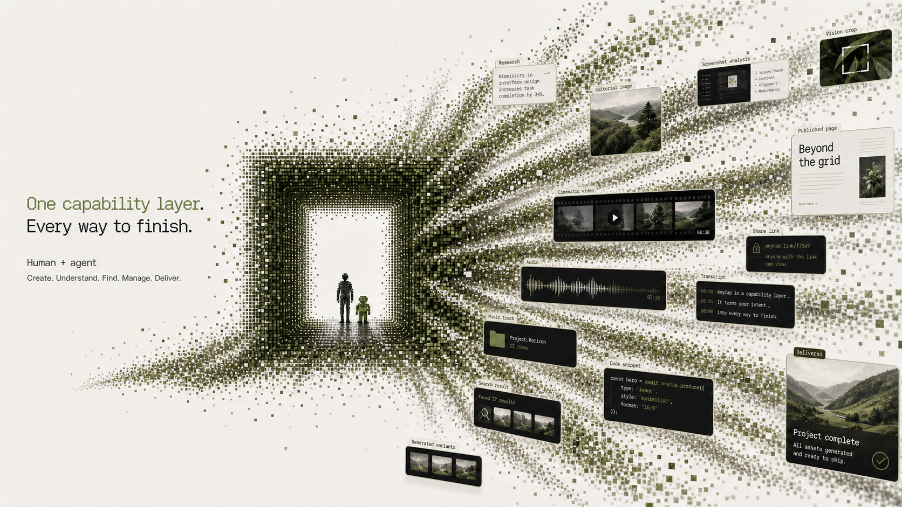
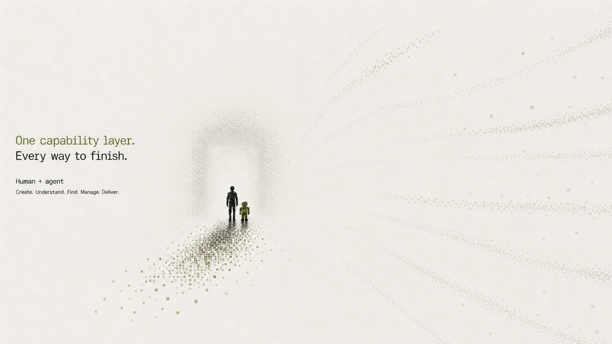
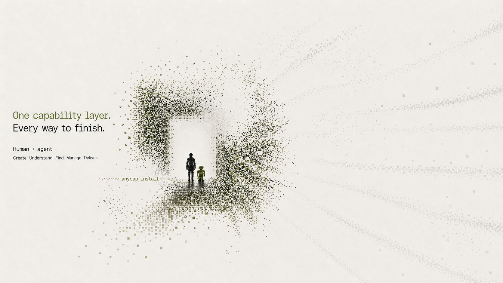
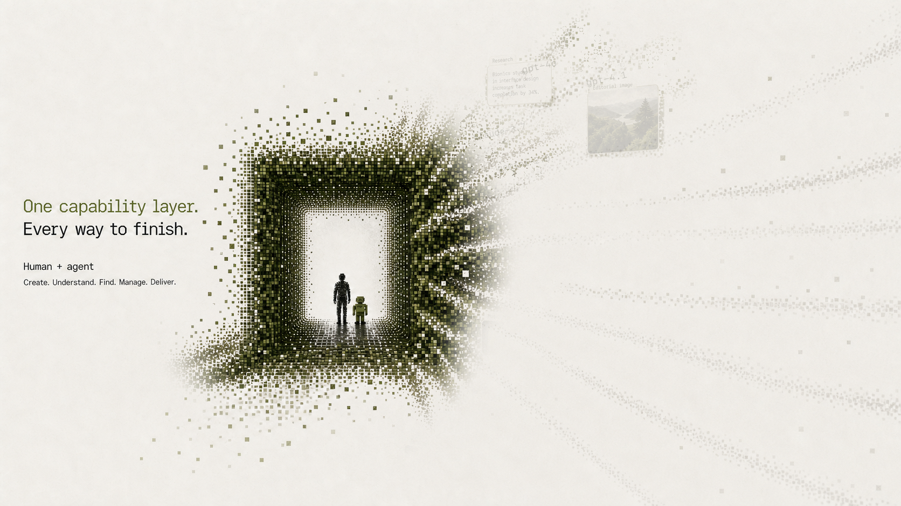
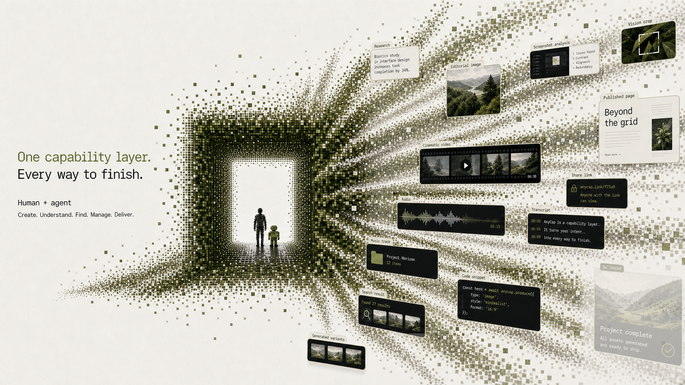
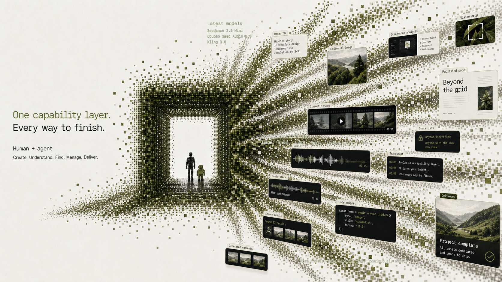
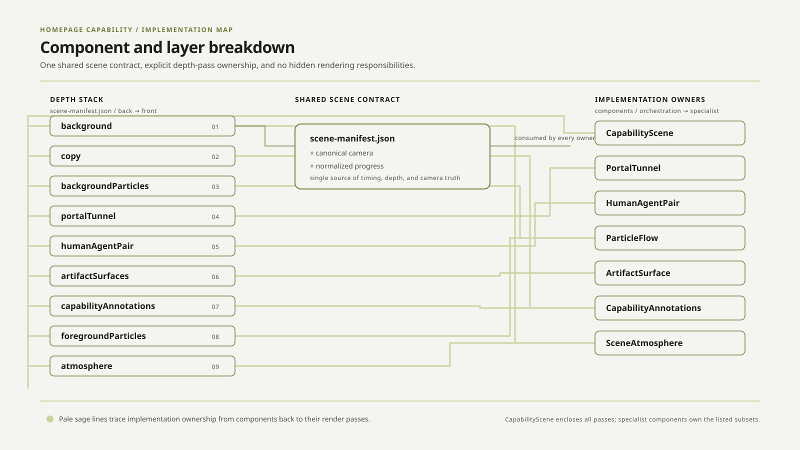

AnyCap · design master
Homepage capability scene
A focused approval surface for comparing the source reference, the final art direction, its motion sequence, and the implementation boundary.
01 · visual alignment
Reference target / Final master
Rendered at equal size · 1672 × 941


02 · motion progression
Motion keyframes
Five checkpoints from constraint to delivery





03 · implementation map
Component breakdown
Scene ownership and depth order
